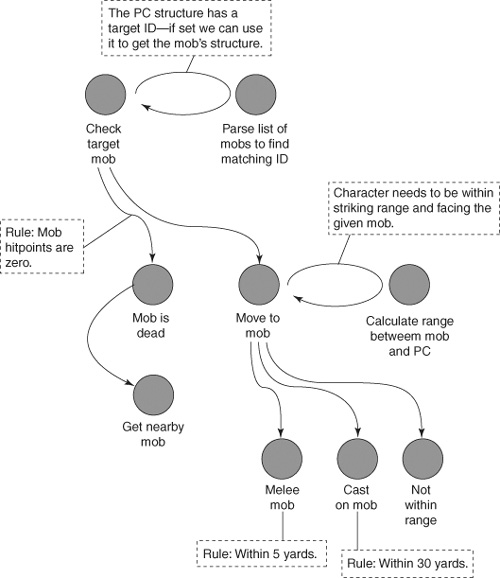

{% include JB/setup %}
{% raw %}
<div>
<a name="toppage" class="pcalibre calibre1"></a><table width="100%" border="0" cellspacing="0" cellpadding="0" class="sfbody"><tr valign="top" class="calibre2"><td class="calibre3"><a name="MainContent" class="pcalibre calibre1"></a><table width="95%" class="sfbody"><tr class="calibre2"><td class="pcalibre1 v"><!--Copyright (c) 2002 Safari Tech Books Online--><table width="100%" border="0" cellspacing="0" cellpadding="2" class="calibre4"><tr class="calibre2"><td valign="middle" class="v1 pcalibre1" height="5"></td></tr><tr class="calibre2"><td valign="middle" class="v1 pcalibre1"><table cellpadding="0" cellspacing="0" border="0" width="100%" class="calibre4"><tr class="calibre2"><td class="calibre6"><span class="calibre7"> </span>
                   
                  <span class="calibre7">   </span>
             <span class="calibre7"> </span></td></tr></table></td><td class="calibre8"/><td valign="middle" class="v2 pcalibre1"> 
           
          <span class="calibre7"><a target="_self" href="ch07.html" title="Previous section" class="pcalibre calibre1"></a></span>
				
				 
				
				<span class="calibre7"><a target="_self" href="ch07lev1sec2.html" title="Next section" class="pcalibre calibre1"></a></span></td></tr></table><div id="section" class="calibre15"><table width="100%" border="0" cellspacing="0" cellpadding="0" class="calibre4"><tr class="calibre2"><td valign="top" class="calibre8"><a href="10061538.html" class="pcalibre calibre1"></a>Security Game Programming Networking Programming Greg Hoglund Gary McGraw Addison Wesley Professional Exploiting Online Games: Cheating Massively Distributed Systems<a name="ch07lev1sec1" class="pcalibre calibre1"></a>
<h3 id="title-IDAA5M1F" class="docSection1Title">Bot Design Fundamentals</h3>
<p class="docText">Let's start with the fundamentals, building on the tools and techniques from <a class="pcalibre6 pcalibre5 calibre1" href="ch06.html#ch06">Chapter 6</a> to ease our way into bot design. Be forewarned, however—bot building is a complicated undertaking. There's no avoiding technical issues here, so fasten your seat belt!</p>
<a name="ch07lev2sec1" class="pcalibre calibre1"></a>
<h4 id="title-IDAW5M1F" class="docSection2Title">Event-Driven Design</h4>
<p class="docText"><a name="iddle1158" class="pcalibre calibre1"></a><a name="iddle1180" class="pcalibre calibre1"></a><a name="iddle1198" class="pcalibre calibre1"></a><a name="iddle1199" class="pcalibre calibre1"></a><a name="iddle1489" class="pcalibre calibre1"></a><a name="iddle2104" class="pcalibre calibre1"></a><a name="iddle2105" class="pcalibre calibre1"></a><a name="iddle2178" class="pcalibre calibre1"></a>The first key concept in bot design involves a familiar (and basic) design pattern—the event control loop. Take another look at the very simple agro farming bot we introduced in <a class="pcalibre6 pcalibre5 calibre1" href="ch02.html#ch02">Chapter 2</a>. The basic structure is apparent—the program loops around waiting for something to happen and then reacts accordingly. Every bot program waits for events to occur (possibly in the game client, maybe on the network, perhaps at some specific memory location) and then does something as a reaction. This is called an event-driven design.</p>
<a name="ch07lev2sec2" class="pcalibre calibre1"></a>
<h4 id="title-IDAJCN1F" class="docSection2Title">State Machines</h4>
<p class="docText">We talk about the concept of state elsewhere in the book, but it's worth pointing out that a bot program not only keeps an eye on game state to track what's going on but also has plenty of state of its own. The bot's main mission is to keep track of a particular point of view in the game; that is, it needs to track game state according to some character's perception. As we note earlier, it also needs to know some basics about the state of the character—things like health status, position, and so on. Perhaps the bot monitors client health by scraping pixels off the screen like the bot in <a class="pcalibre6 pcalibre5 calibre1" href="ch02.html#ch02">Chapter 2</a> did. Or maybe it looks around to make sure it's not being monitored by game minders before doing its dirty work. Whatever it does, the bot requires a state machine model of the world it is interacting with.</p>
<p class="docText">Most bots are designed as state machines. The bot controls a character and that character is in some state, such as "running," "sitting," "casting," "healing," and so on. The bot has rules for transitioning between states. For example, a <span class="docEmphasis">transition rule</span> used in the "fighting" state might be "If my health status is less than 25% of normal, enter state 'running away for dear life.'" Each state has its own set of transition rules and can respond to events and status in the game by selecting and executing these rules. Those readers familiar with basic AI will recognize this as a kind of production system. Obviously, for this system to work, the tricks introduced in <a class="pcalibre6 pcalibre5 calibre1" href="ch06.html#ch06">Chapter 6</a> should be pressed into service to read things like character health, spellcasting capability (often called mana), target position, target location, and so on. In addition, actions taken while the bot-controlled character is in a given state need to be executed using the tricks from <a class="pcalibre6 pcalibre5 calibre1" href="ch06.html#ch06">Chapter 6</a> that allow the character to do things such as move, attack, cast certain spells, and so on.</p>
<p class="docText"><a name="iddle1324" class="pcalibre calibre1"></a><a name="iddle1458" class="pcalibre calibre1"></a><a name="iddle1607" class="pcalibre calibre1"></a><a name="iddle1719" class="pcalibre calibre1"></a><a name="iddle1941" class="pcalibre calibre1"></a><a class="pcalibre6 pcalibre5 calibre1" href="#ch07fig01">Figure 7-1</a> shows a portion of an example bot's state machine. This state machine controls AFK combat in WoW. As the diagram shows, the bot begins by reading several structures from the game client's memory. The initialization of the player character (PC) structure pointer and calculation of the mob list happens to be performed via sampling breakpoints (see <a class="pcalibre6 pcalibre5 calibre1" href="ch06.html#ch06">Chapter 6</a>). Then, character health is calculated as a percentage of total, and this determines whether a fight should continue. WoW has an odd quirk—having one hitpoint (a very low health status value indeed) puts the character into "ethereal spirit form." In this state, a character can travel back to its body for resurrection (an activity necessary to resume play after being killed and having your "soul" transported to a central location).</p>
<a name="ch07fig01" class="pcalibre calibre1"></a><p class="calibre28"><center class="calibre29">
<h5 class="docFigureTitle">Figure 7-1. A bot state machine can be represented as a connected graph. Each grey circle is a state, and the arrows show possible state transitions.</h5>
</center></p><p class="docText"><div class="v8 pcalibre3 pcalibre2"><a target="_blank" href="fig07-01_alt.jpg" class="pcalibre calibre20">[View full size image]</a></div></p>
<br class="calibre15"/>
<p class="docText">Deeper into our bot's state machine is more logic for finding and killing mobs. As you can see in <a class="pcalibre6 pcalibre5 calibre1" href="#ch07fig02">Figure 7-2</a>, if a target mob is detected and the character has enough health to keep fighting, the bot will attempt to close the distance between the PC and the mob. You could employ several strategies here, such as always maintaining a distance short enough to cast spells but too long for hand-to-hand combat (another example of game specifics). One clever WoW-specific hack known as Z-hacking implements this idea by floating the character far above the heads of mobs so the PC can't be attacked. This hack involves directly changing the z-coordinate corresponding to the PC position.</p>
<p class="docText"></p><a name="ch07fig02" class="pcalibre calibre1"></a><p class="calibre28"><center class="calibre29">
<h5 class="docFigureTitle">Figure 7-2. A state machine representing closing the range to a target mob.</h5>
</center></p><p class="docText">
</p>
<br class="calibre15"/>
<p class="docText"><a name="iddle1179" class="pcalibre calibre1"></a><a name="iddle1181" class="pcalibre calibre1"></a><a name="iddle1201" class="pcalibre calibre1"></a><a name="iddle1297" class="pcalibre calibre1"></a><a name="iddle1514" class="pcalibre calibre1"></a><a name="iddle1717" class="pcalibre calibre1"></a><a name="iddle2330" class="pcalibre calibre1"></a><a name="iddle1191" class="pcalibre calibre1"></a><a name="iddle1194" class="pcalibre calibre1"></a><a name="iddle1851" class="pcalibre calibre1"></a><a name="iddle1854" class="pcalibre calibre1"></a><a name="iddle2127" class="pcalibre calibre1"></a>In <a class="pcalibre6 pcalibre5 calibre1" href="#ch07fig02">Figure 7-2</a>, the bot closes the range between the PC and the mob, then casts spells if within 30 yards and uses melee (hand-to-hand combat) if within 5 yards. If the PC is too far away from the target for either of these, the bot moves the PC toward the mob. In many games, once a target mob has been attacked, it will come to the PC—you don't need to alter position to continue fighting (highly convenient). Of course, if there is no target mob identified, the bot needs to hunt around and find one.</p>
<a name="ch07lev2sec3" class="pcalibre calibre1"></a>
<h4 id="title-IDAJKN1F" class="docSection2Title">Moving the Player Character</h4>
<p class="docText">As we said, if the PC is not within range of a mob, it will need to be moved. Movement can be handled in several ways:</p>
<ul class="calibre18"><li class="calibre19"><p class="docText">By posting keystrokes that cause movement</p></li><li class="calibre19"><p class="docText">By hijacking the main thread and calling an internal movement function</p></li><li class="calibre19"><p class="docText">By injecting network packets that indicate movement to the server</p></li><li class="calibre19"><p class="docText">By simply setting the PC's coordinates directly in memory (a feat that is sometimes called <span class="docEmphasis">telehacking</span> depending on the distance involved)</p></li></ul>
<p class="docText">The last one is the most straightforward method. If the PC location coordinates set in this manner aren't very far from the current location, this kind of action can even appear to be normal movement.</p>
<p class="docText">Telehacking uses the direct PC location setting method, but it usually refers to teleporting over vast regions of the game map, as opposed to small teleports to correct for position within a few virtual yards.</p>
<p class="docText">Let's make this concrete. The following code snippet checks range to a mob and presses a key to force movement for a given time period.</p>
<p class="docText">First, we refresh the mob structure. This reads a fresh copy of the mob's data from the game client memory.</p>
<div class="docText1"><pre class="calibre43">assert(m_target_mob);
m_target_mob-&gt;Refresh();
</pre></div><br class="calibre15"/>
<p class="docText">We call <tt class="calibre38">SetSelfToFace()</tt> to set the direction of the PC to point directly at the mob. (More detail about this is provided in the Calculating Direction subsection.)</p>
<div class="docText1"><pre class="calibre43">SetSelfToFace(m_target_mob-&gt;m_x,
              m_target_mob-&gt;m_y,
              m_target_mob-&gt;m_z);
</pre></div><br class="calibre15"/>
<p class="docText">We calculate range between the PC and the target mob. (See the next subsection for a detailed description of this calculation.)</p>
<div class="docText1"><pre class="calibre43">float range = CalculateRangeFromSelf(
             m_target_mob-&gt;m_x,
             m_target_mob-&gt;m_y,
             m_target_mob-&gt;m_z);

logprintf("mob range is %f units from self", range);
</pre></div><br class="calibre15"/>
<p class="docText">Finally, we press the up arrow key for a calculated time, based on distance. The <tt class="calibre38">PostKeystroke()</tt> method is defined in <a class="pcalibre6 pcalibre5 calibre1" href="ch06.html#ch06">Chapter 6</a> if you need to refresh your memory.</p>
<div class="docText1"><pre class="calibre43">// calc time for key press based on distance
// -----------------------------------------
// try to move the PC only close enough to begin
// ranged attacks

// TODO: make the calculation account for user-supplied
// min range value
DWORD time_to_press = range * 50; //TODO, make configurable

PostKeystroke(VK_UP, time_to_press);
</pre></div><br class="calibre15"/>
<a name="ch07lev3sec1" class="pcalibre calibre1"></a>
<h5 id="title-IDAFNN1F" class="docSection3Title">Calculating Distance</h5>
<p class="docText">The range between the PC and the target mob is obviously very important. It not only controls transition rules in our state charts from <a class="pcalibre6 pcalibre5 calibre1" href="#ch07fig01">Figures 7-1</a> and <a class="pcalibre6 pcalibre5 calibre1" href="#ch07fig02">7-2</a> but also allows us to calculate how long to hold down a movement key. We can calculate range by using the x-, y-, and z-coordinates of the two objects involved.</p>
<p class="docText">The following function calculates the distance between the player character and a target coordinate:</p>
<div class="docText1"><pre class="calibre43">float CalculateRangeFromSelf(float mobX, float mobY, float mobZ)
{
</pre></div><br class="calibre15"/>
<p class="docText">The <tt class="calibre38">aCharacterMob</tt> object represents the PC's data structure. The term <span class="docEmphasis">mob</span> may seem to be overloaded in this case, but technically speaking, the PC is a "mobile" just like all of the other ones!</p>
<div class="docText1"><pre class="calibre43">       Mob *aCharacterMob = GetSelfMob();
       if(!aCharacterMob)
       {
         logprintf("warning, could not get self mob");
         return 0;
       }
</pre></div><br class="calibre15"/>
<p class="docText"><a name="iddle1185" class="pcalibre calibre1"></a><a name="iddle1403" class="pcalibre calibre1"></a><a name="iddle1716" class="pcalibre calibre1"></a><a name="iddle1845" class="pcalibre calibre1"></a>The <tt class="calibre38">Refresh()</tt> call here causes the bot program to read a fresh copy of the PC data structure's values into local memory. This updates the information with accurate xyz positioning data needed for the calculation.</p>
<div class="docText1"><pre class="calibre43">       aCharacterMob-&gt;Refresh();
</pre></div><br class="calibre15"/>
<p class="docText">The calculation returns a float as the distance. The <tt class="calibre38">sqrt()</tt> function calculates square root, and <tt class="calibre38">pow()</tt> raises the number by the specified power. If you remember your Cartesian geometry from seventh grade, you'll recognize this calculation.</p>
<div class="docText1"><pre class="calibre43">       //calculate range
       float range = sqrt( (float)(
              pow(aCharacterMob-&gt;m_x - mobX, 2)
              +
              pow(aCharacterMob-&gt;m_y - mobY, 2)
              +
              pow(aCharacterMob-&gt;m_z - mobZ, 2)
       ));

       return range;
}
</pre></div><br class="calibre15"/>
<a name="ch07lev3sec2" class="pcalibre calibre1"></a>
<h5 id="title-IDA1QN1F" class="docSection3Title">Calculating Direction</h5>
<p class="docText">In many games, in order to attack something, the PC needs to be facing the target. In WoW, the direction an object is facing is stored within the in-memory data structure. By accessing this value, we can read (and even write) the current direction. Similar to the way the telehacking trick sets x-, y-, and z-coordinates, direction can simply be overwritten in memory and the character's direction will instantly update on screen. (See <a class="pcalibre6 pcalibre5 calibre1" href="ch06.html#ch06">Chapter 6</a> for more detail on the necessary techniques.)</p>
<p class="docText">The following code calculates the required direction and also overwrites the stored PC direction.</p>
<div class="docText1"><pre class="calibre43">void SetSelfToFace( float mobX, float mobY, float mobZ )
{
</pre></div><br class="calibre15"/>
<p class="docText">This call gets a pointer to the PC structure.</p>
<div class="docText1"><pre class="calibre43">       Mob *aMob = GetSelfMob();
       if(!aMob)
       {

         logprintf("warning, could not get self mob");
         return;
        }
</pre></div><br class="calibre15"/>
<p class="docText"><a name="iddle1186" class="pcalibre calibre1"></a><a name="iddle1405" class="pcalibre calibre1"></a><a name="iddle1714" class="pcalibre calibre1"></a><a name="iddle1846" class="pcalibre calibre1"></a>The information in the local representation of the PC structure is updated. This technique reads the data from the <tt class="calibre38">WoW.exe</tt> memory space and copies it locally.</p>
<div class="docText1"><pre class="calibre43">       aMob-&gt;Refresh();
</pre></div><br class="calibre15"/>
<p class="docText">We now get the current x/y position of the character and calculate the direction required to face the point indicated by <tt class="calibre38">mobX</tt> and <tt class="calibre38">mobY</tt>. This function is basically used to turn the character to face a target given by the coordinates.</p>
<div class="docText1"><pre class="calibre43">       float g = 0;
       float RealX = aMob-&gt;m_x - mobX;
       float RealY = aMob-&gt;m_y - mobY;

       if(RealX &lt; 0)
       {
         RealX = RealX * -1;
       }
       if(RealY &lt; 0)
       {
         RealY = RealY * -1;
       }
</pre></div><br class="calibre15"/>
<p class="docText">The next part of the calculation uses the <tt class="calibre38">RTOD</tt> macro, which converts radians to degrees and is defined as:</p>
<div class="docText1"><pre class="calibre43">#define M_PI 3.14159265358979
#define RTOD(r) ((r) * 180 / M_PI)
</pre></div><br class="calibre15"/>
<p class="docText">The value <tt class="calibre38">g</tt> is in degrees and indicates the direction we want the PC to face. Trigonometry is handy here.</p>
<div class="docText1"><pre class="calibre43">       if((mobX &gt; aMob-&gt;m_x) &amp;&amp; (mobY &gt; aMob-&gt;m_y))
       {
         g = RTOD( atan(RealY/RealX) );
       }
       if((mobX &gt; aMob-&gt;m_x) &amp;&amp; (mobY &lt; aMob-&gt;m_y))
       {
         g = (( RTOD(atan( RealY / RealX )) * -1 ) + 90) + 270;
       }
       if((mobX &lt; aMob-&gt;m_x) &amp;&amp; (mobY &lt; aMob-&gt;m_y))
       {
         g = RTOD(atan( RealY/RealX )) + 180;
       }
       if((mobX &lt; aMob-&gt;m_x) &amp;&amp; (mobY &gt; aMob-&gt;m_y))
       {
         g = (( RTOD(atan( RealY/RealX )) * -1 ) + 90) + 90;
       }
</pre></div><br class="calibre15"/>
<p class="docText">Next, we convert the degrees back to radians and set the PC direction value.</p>
<div class="docText1"><pre class="calibre43">       float to_rotate = ((2*3.14159265358979)/360)*g;

       //logprintf("to_rotate: %f\n", to_rotate);

       SetSelfRotation(to_rotate);
}

void SetSelfRotation(float to_face)
{
       Mob *aMob = GetSelfMob();
       if(aMob)
       {
         aMob-&gt;SetFacing(to_face);
       }
       else
       {
         logprintf("warning, could not get self mob");
       }
}
</pre></div><br class="calibre15"/>
<p class="docText">Finally, here is a small routine that overwrites the in-memory direction value (called <tt class="calibre38">to_face</tt> in the code). This is a member function in our <tt class="calibre38">Mob</tt> class:</p>
<div class="docText1"><pre class="calibre43">void Mob::SetFacing(float to_face)
{
       SIZE_T bread;
</pre></div><br class="calibre15"/>
<p class="docText">Remember here that <tt class="calibre38">m_baseaddress</tt> is the address of the character structure in the <tt class="calibre38">WoW.exe</tt> memory space. The <tt class="calibre38">PC_FACING_OFFSET</tt> is the offset in that <a name="iddle1195" class="pcalibre calibre1"></a><a name="iddle1855" class="pcalibre calibre1"></a><a name="iddle2128" class="pcalibre calibre1"></a>structure where the direction is stored. This is a 32-bit value that is treated as a float.</p>
<div class="docText1"><pre class="calibre43">       //TODO read from config file
       if(WriteProcessMemory( m_parent_engine-&gt;m_prochandle,
              (void *)(m_baseaddress + PC_FACING_OFFSET),
              &amp;to_face,
              4,
              &amp;bread) == FALSE)
       {
         logprintf("error writing to facing");
         return;
       }
}
</pre></div><br class="calibre15"/>
<p class="docText">This illustrates one of the basic movement operations. It's very important to be able to set the direction of the character and also potentially the camera. Calculations like this can be extended, for example, to teleport the character to a location behind an adversary in player versus player (PvP) combat and subsequently rotate to face the target's back. Since PvP combat is significantly affected by the direction of facing, in theory you can develop a PvP assist macro that puts you behind your target and facing for a swing with one simple key press. Definitely cheating.</p>
<a name="ch07lev3sec3" class="pcalibre calibre1"></a>
<h5 id="title-IDAJXN1F" class="docSection3Title">Telehacking</h5>
<p class="docText">While it is possible to calculate a direction to move and manually press the movement keys as we demonstrate earlier, the <tt class="calibre38">WoW.exe</tt> architecture, and many similar games, simply trust the position values the client reports. They don't evaluate whether a move is physically possible or even plausible. In other words, the server does not attempt to verify whether the PC actually used movement keys to move. Thus, once you set a new position in the PC structure, it will be used.</p>
<p class="docText">As we note earlier, this technique is sometimes called telehacking because in effect you teleport the PC directly and instantaneously to a new position. So, when ambling over to the target mob or opponent isn't your style, you can simply teleport directly to the target or, better yet, a short distance away to prepare for battle. There are lots of possibilities. If combat isn't the goal, you can use telehacking to teleport through walls, get into areas you're not supposed to be in, or simply teleport to every treasure location and loot it before you get noticed.</p>
<p class="docText">The following code overwrites the xyz position of the character in memory and in this way telehacks the character to the target location.</p>
<div class="docText1"><pre class="calibre43">void Mob::SetXYZ(float x, float y, float z)
{
       SetX(x);
       SetY(y);
       SetZ(z);
}
</pre></div><br class="calibre15"/>
<p class="docText">Pretty darn easy. And, again, we use the member functions in our <tt class="calibre38">Mob</tt> class for overwriting remote memory.</p>
<div class="docText1"><pre class="calibre43">void Mob::SetX(float x)
{
      SIZE_T bread;

      // Write new X
      if(WriteProcessMemory( m_parent_engine-&gt;m_prochandle,
             (void *)(m_baseaddress + PC_X_OFFSET),
             &amp;x,
             4,
             &amp;bread) == FALSE)
      {
        logprintf("error writing to X");
        return;
      }
</pre></div><br class="calibre15"/>
<p class="docText">The following section of code is commented out in the bot we're using as a pattern, but the developers of the bot found that there is a backup location where position is stored. This could be trouble if some kind of verification were being calculated. Ultimately resetting the backup value didn't seem to matter, but the code is here for completeness.</p>
<div class="docText1"><pre class="calibre43">#if 0
       // Write new X to backup
       if(WriteProcessMemory( m_parent_engine-&gt;m_prochandle,
              (void *)(m_baseaddress + PC_BK_X_OFFSET),
              &amp;x,
              4,
              &amp;bread) == FALSE)
       {
         logprintf("error writing to backup X");
         return;
       }
#endif

}
</pre></div><br class="calibre15"/>
<p class="docText">And, again, we use the member functions in our <tt class="calibre38">Mob</tt> class for overwriting remote memory.</p>
<div class="docText1"><pre class="calibre43">void  Mob::SetY(float y)
{
       SIZE_T bread;

       // Write new Y
       if(WriteProcessMemory( m_parent_engine-&gt;m_prochandle,
              (void *)(m_baseaddress + PC_Y_OFFSET),
              &amp;y,
              4,
              &amp;bread) == FALSE)
       {
         logprintf("error writing to Y");
         return;
       }
</pre></div><br class="calibre15"/>
<p class="docText">And the backup memory too (just in case).</p>
<div class="docText1"><pre class="calibre43">#if 0
       // Write new Y to backup
       if(WriteProcessMemory( m_parent_engine-&gt;m_prochandle,
              (void *)(m_baseaddress + PC_BK_Y_OFFSET),
              &amp;y,
              4,
              &amp;bread) == FALSE)
       {
         logprintf("error writing to backup Y");
         return;
       }
#endif
}

void  Mob::SetZ(float z)
{
       SIZE_T bread;
       // Write new Z
       if(WriteProcessMemory( m_parent_engine-&gt;m_prochandle,
              (void *)(m_baseaddress + PC_Z_OFFSET),
              &amp;z,
              4,
              &amp;bread) == FALSE)
       {
         logprintf("error writing to z");
         return;
       }

#if 0
       // Write new Z to backup
       if(WriteProcessMemory( m_parent_engine-&gt;m_prochandle,
              (void *)(m_baseaddress + PC_BK_Z_OFFSET),
              &amp;z,
              4,
              &amp;bread) == FALSE)
       {
         logprintf("error writing to backup Z");
         return;
       }
#endif
}
</pre></div><br class="calibre15"/>
<p class="docText"><a name="iddle1187" class="pcalibre calibre1"></a><a name="iddle1192" class="pcalibre calibre1"></a><a name="iddle1197" class="pcalibre calibre1"></a><a name="iddle1406" class="pcalibre calibre1"></a><a name="iddle1715" class="pcalibre calibre1"></a><a name="iddle1726" class="pcalibre calibre1"></a><a name="iddle1825" class="pcalibre calibre1"></a><a name="iddle1847" class="pcalibre calibre1"></a><a name="iddle1852" class="pcalibre calibre1"></a><a name="iddle1856" class="pcalibre calibre1"></a><a name="iddle1913" class="pcalibre calibre1"></a><a name="iddle2130" class="pcalibre calibre1"></a>Telehacking is a powerful technique you can use in many ways (for one specific example, see the next subsection about ping-ponging). An interesting way to use this concept is to <span class="docEmphasis">telestick</span> onto a target. Telesticking keeps the PC stuck at a precise location with respect to a target mob. This is especially useful in PvP combat situations because you can telestick yourself <span class="docEmphasis">behind and facing</span> your enemy. As is apparent, in WoW, position is critically important during combat. As long as the PC is behind its target, the target can't hit the PC. This works wonders against enemy players who use excessive jumping/strafing as a way to keep your PC from being able to hit them. In WoW, you can render melee classes like warriors almost ineffective when they're using the jumping/strafing combat technique. By using an autotelestick bot, you can regain the advantage in PvP combat.</p>
<a name="ch07lev3sec4" class="pcalibre calibre1"></a>
<h5 id="title-IDAI3N1F" class="docSection3Title">Ping-Ponging</h5>
<p class="docText">For PC types that have a ranged attack (recall that there are different classes of characters, each with its own characteristics), the technique called ping-ponging lets you maintain a consistent distance from a mob while you pound it with attacks. The mob will run to close its distance to the PC, but <a name="iddle1188" class="pcalibre calibre1"></a><a name="iddle1301" class="pcalibre calibre1"></a><a name="iddle1509" class="pcalibre calibre1"></a><a name="iddle1848" class="pcalibre calibre1"></a>before it gets there, the PC telehacks to a new location just far enough away to allow another ranged attack before the mob can reach the character again. Ping-ponging relies on telehacking to do most of the heavy lifting.</p>
<a name="ch07lev2sec4" class="pcalibre calibre1"></a>
<h4 id="title-IDAY4N1F" class="docSection2Title">Making a Player Character Fight</h4>
<p class="docText">Once the PC is in range of a target, you might use your bot to cause the PC to carry out various actions, such as fighting or using spells. This section of code, cut from a prototype bot, attempts to drive a character through a series of actions for combat.</p>
<p class="docText">We first refresh the target's information.</p>
<div class="docText1"><pre class="calibre43">assert(m_target_mob);
m_target_mob-&gt;Refresh();
bool slapin_extra_range_attack = FALSE;
</pre></div><br class="calibre15"/>
<p class="docText">Then we check to see whether we want to melee (close combat) or use ranged attacks (such as magic spells). We use that decision to determine whether telesticking on the target is the desired configuration.</p>
<div class="docText1"><pre class="calibre43">if( (FALSE==m_melee_class) &amp;&amp; (TRUE==m_telestick) )
{
</pre></div><br class="calibre15"/>
<p class="docText">When using a ranged attack, we can ping-pong back and forth between two locations, keeping the mob in constant movement. This prevents the mob from being able to land any blows while the ranged attack does its work.</p>
<div class="docText1"><pre class="calibre43">       if( m_pingpong_target &amp;&amp;
              (m_pingpong_target == m_target_mob-&gt;m_id))
       {
         if(m_pingyes)
         {
           //goto pong
           Mob *aSelfMob = GetSelfMob();
           aSelfMob-&gt;SetXYZ( m_pong_x, m_pong_y, m_pong_z );
           m_pingyes = FALSE;
           slapin_extra_range_attack = TRUE;
         }
         else
         {
           //goto ping
           Mob *aSelfMob = GetSelfMob();
           aSelfMob-&gt;SetXYZ( m_ping_x, m_ping_y, m_ping_z );
           m_pingyes = TRUE;
           slapin_extra_range_attack = TRUE;
         }
       }
}

</pre></div><br class="calibre15"/>
<p class="docText">Once we are in the new location, we need to face the target.</p>
<div class="docText1"><pre class="calibre43">SetSelfToFace( m_target_mob-&gt;m_x,
              m_target_mob-&gt;m_y,
              m_target_mob-&gt;m_z);
</pre></div><br class="calibre15"/>
<p class="docText">Just setting the position and direction is not enough. We actually have to move a small bit for the location to update to the server properly. The new position information we set isn't used until an actual movement message is posted. We can easily accomplish this with a keystroke.</p>
<div class="docText1"><pre class="calibre43">// back up a tap
PostKeystroke(VK_DOWN, 120);

float range = CalculateRangeFromSelf(
               m_target_mob-&gt;m_x,
               m_target_mob-&gt;m_y,
               m_target_mob-&gt;m_z);

logprintf("mob range is %f units from self", range);
</pre></div><br class="calibre15"/>
<p class="docText">When we telestick, sometimes we end up too close and the mob ends up behind us. This is bad because now we aren't facing the right direction, and our swings won't take. In this precarious situation, this little bit of code ensures we are back slightly from the mob.</p>
<div class="docText1"><pre class="calibre43">// this tick back is needed so we don't move past the target
if( abs(range) &lt; 3.2)
{
       PostKeystroke(VK_DOWN, 120); //TODO, make configurable?
}
</pre></div><br class="calibre15"/>
<p class="docText">If ping-ponging, we should fire off a ranged attack, accomplished by sending a hotkey press previously configured in the game's UI.</p>
<div class="docText1"><pre class="calibre43">if(slapin_extra_range_attack)
{
       PostKeystroke(0x32, 120);
       PostPause(m_cast_time);
}
else
{
</pre></div><br class="calibre15"/>
<p class="docText">We ensure we're in attack mode here—a state that can be toggled on and off. Sometimes attack mode will already be on; other times it will be off and need to be turned on. The <tt class="calibre38">inAttackMode</tt> variable tracks state.</p>
<div class="docText1"><pre class="calibre43">       // the melee attack is a toggle,
       // so don't apply it unless it's not already on
       if(FALSE == inAttackMode)
       {
         //perform melee attack, slot 1
         PostKeystroke(0x31, 10);
       }

       // tap for a hero strike in slot 3
       PostKeystroke(0x33, 10);
}

</pre></div><br class="calibre15"/>
<p class="docText">Instead of reverse engineering the location of the attack mode state, we opted to take a simple approach and sample a pixel location that we know will be colored in a specific way if we are in attack mode. We describe this technique in both <a class="pcalibre6 pcalibre5 calibre1" href="ch06.html#ch06">Chapter 6</a> and <a class="pcalibre6 pcalibre5 calibre1" href="ch02.html#ch02">Chapter 2</a>.</p>
<div class="docText1"><pre class="calibre43">// return true if we are in attack mode
// TODO come up with an in-memory way to do this...

BOOL WowzerEngine::GetAttackMode()
{
</pre></div><br class="calibre15"/>
<p class="docText">This coordinate is the border of slot 1:</p>
<div class="docText1"><pre class="calibre43">       COLORREF cr = GetColorOfPixel(26,731);
       //logprintf(" got %d,%d,%d",
              GetRValue(cr),
              GetGValue(cr),
              GetBValue(cr));
       //DWORD difference = abs(GetGValue(cr) - 138);
       if(GetGValue(cr)&gt;100)
       {
         // we are in agro mode
         return true;
       }

       return false;
}
</pre></div><br class="calibre15"/>
<p class="docText"><a name="iddle1190" class="pcalibre calibre1"></a><a name="iddle1661" class="pcalibre calibre1"></a><a name="iddle1723" class="pcalibre calibre1"></a><a name="iddle1850" class="pcalibre calibre1"></a>This section contains lots of central bot actions: how to calculate direction and distance, how to set up and carry out a ping-pong, and how to deliver keystrokes to make the PC fight or cast ranged attacks. This code can be extended to a wide variety of operations, of course.</p>
<a name="ch07lev2sec5" class="pcalibre calibre1"></a>
<h4 id="title-IDAIEO1F" class="docSection2Title">Looting the Mob</h4>
<p class="docText">In most games, once you kill a mob, you probably want to loot it (take its items, possibly skin the hide, and so on). In normal play, you can accomplish this with mouse clicks on the screen. But our automated bot version simply right-clicks through an array of locations on the screen that have high probability of causing the loot dialog to pop up. This emulates a shift-click so the loot is taken automatically. We use teleport to make sure the character is positioned properly relative to the mob's dead body.</p>
<div class="docText1"><pre class="calibre43">void HunterBot::TeleportAndLootMob(Mob *theMob)
{
       TeleportToTarget(theMob-&gt;m_id);
       LootTheDead();
}

void HunterBot::LootTheDead()
{
       logprintf("LOOT THE DEAD");

       RMouseClick(440,390, TRUE, 120);
       RMouseClick(440,443, TRUE, 120);
       RMouseClick(440,500, TRUE, 120);
       RMouseClick(440,550, TRUE, 120);
       RMouseClick(440,600, TRUE, 120);
       RMouseClick(440,680, TRUE, 120);
       RMouseClick(513,390, TRUE, 120);
       RMouseClick(513,443, TRUE, 120);
       RMouseClick(513,500, TRUE, 120);
       RMouseClick(513,550, TRUE, 120);
       RMouseClick(513,600, TRUE, 120);
       RMouseClick(513,680, TRUE, 120);
       RMouseClick(580,390, TRUE, 120);
       RMouseClick(580,443, TRUE, 120);
       RMouseClick(580,500, TRUE, 120);
       RMouseClick(580,550, TRUE, 120);
       RMouseClick(580,600, TRUE, 120);
       RMouseClick(580,680, TRUE, 120);
}
</pre></div><br class="calibre15"/>
<p class="docText"><a name="iddle1063" class="pcalibre calibre1"></a><a name="iddle1184" class="pcalibre calibre1"></a><a name="iddle1189" class="pcalibre calibre1"></a><a name="iddle1193" class="pcalibre calibre1"></a><a name="iddle1620" class="pcalibre calibre1"></a><a name="iddle1712" class="pcalibre calibre1"></a><a name="iddle1721" class="pcalibre calibre1"></a><a name="iddle1724" class="pcalibre calibre1"></a><a name="iddle1844" class="pcalibre calibre1"></a><a name="iddle1849" class="pcalibre calibre1"></a><a name="iddle1853" class="pcalibre calibre1"></a><a name="iddle2050" class="pcalibre calibre1"></a>This technique is ugly and relies on brute force, but it works fairly well for WoW. Other games might require different looting techniques.</p>
<a name="ch07lev2sec6" class="pcalibre calibre1"></a>
<h4 id="title-IDAKQO1F" class="docSection2Title">Mob Selection and Blacklisting</h4>
<p class="docText">As the PC fights, it may encounter mobs that it just can't kill, or those that for some unknown reason have weird data structures. In these cases, you can blacklist these mobs so you don't attack them anymore.</p>
<p class="docText">In the state machine for the bot, we check to see whether we keep targeting the same mob. We keep a counter for this purpose, and if we haven't been able to kill this mob for 100 iterations of the state machine, we blacklist the mob by its ID number. The bot will never try to target it again.</p>
<div class="docText1"><pre class="calibre43">if(m_last_target_mob_id == m_target_mob-&gt;m_id)
{
       logprintf("grind counter at %d",
             m_number_of_kill_attempts);
       if(++m_number_of_kill_attempts &gt; 100)
       {
         logprintf(" we have been grinding on this mob for a
while...");

         logprintf("blacklisting mob id %d", m_target_mob-&gt;m_id);

         AddMobToBlacklist(m_target_mob-&gt;m_id);

         m_target_mob = 0;
         m_last_target_mob_id = 0;
         m_number_of_kill_attempts=0;

         // nothing, find one in the database
         SetCurrentState(SH_SELECT_Mob);
         break;
       }
}
</pre></div><br class="calibre15"/>
<p class="docText">The blacklist is just a list of mob IDs to ignore. When in the mob selection state, we simply check the targets against this list. The following code selects the mob nearest to the PC and begins the process of closing in for combat.</p>
<div class="docText1"><pre class="calibre43">Mob *aSelfMob = GetSelfMob();
if(aSelfMob)
{
  aSelfMob-&gt;Refresh();
</pre></div><br class="calibre15"/>
<p class="docText">The <tt class="calibre38">GetNearestMob()</tt> function uses a database of mobs previously siphoned out of the <tt class="calibre38">WoW.exe</tt> memory.</p>
<div class="docText1"><pre class="calibre43">  // get the nearest, living mob
  Mob *aTargetMob = GetNearestMob(MobTYPE_NPC);
  if(aTargetMob)
  {
    m_target_mob = aTargetMob;
</pre></div><br class="calibre15"/>
<p class="docText">Here we reset the kill counter only if the mob is new. If this is the same mob we just tried to kill, we keep incrementing the kill attempt counter so that we can blacklist it if we find that necessary.</p>
<div class="docText1"><pre class="calibre43">    if(m_target_mob-&gt;m_id != m_last_target_mob_id)
    {
      logprintf("detected a new target mob, id %d",
            m_target_mob-&gt;m_id);
      m_last_target_mob_id = m_target_mob-&gt;m_id;
      m_number_of_kill_attempts=0;
    }
    else
    {
      logprintf("target mob remains the same");
    }

  // TODO, now attempt to TAB set the
  // given mob

  SetCurrentState(SH_MOVETO_Mob);
  }
  else
  {
    m_target_mob = 0;
    SetCurrentState(SH_NO_Mob);
  }
}
</pre></div><br class="calibre15"/>
<p class="docText">The mob list itself is a linked list with a global pointer inside the <tt class="calibre38">WoW.exe</tt> process. The following code illustrates how the mob list is siphoned out. Note that this hack is hard coded to a specific patch of WoW and will need to have its addresses updated for any other versions.</p>
<div class="docText1"><pre class="calibre43">DWORD WowzerEngine::ReloadMobList()
{
       // empty database (todo: maybe not empty, so we
       // can track ppl who move in and out of area)
       //m_pc_database.clear();
</pre></div><br class="calibre15"/>
<p class="docText">The address is a global variable that could change with patch levels of the <tt class="calibre38">.exe</tt>. You can use some of the decompiler tricks we illustrate in <a class="pcalibre6 pcalibre5 calibre1" href="ch08.html#ch08">Chapter 8</a> to update this value dynamically for each build of the game.</p>
<div class="docText1"><pre class="calibre43">       // contains a ptr to mobTable
       DWORD mobTablePtrAddr = 0x00A41b0C;
       DWORD mobTableFirst = 0;
       DWORD mobTablePtr = 0;
       DWORD bread = 0;

       CHAR name [48];

       if( ReadProcessMemory(
              m_prochandle,
              (void *)mobTablePtrAddr,
              &amp;mobTablePtr,
              4,
              &amp;bread) == FALSE)
       {
         logprintf("failed to read address mobTablePtrAddr");
         return 0;
       }
       logprintf("mobTablePtrAddr: 0x%08X\n", mobTablePtrAddr);

       mobTableFirst = mobTablePtr;
       mob_list_struct mob;
</pre></div><br class="calibre15"/>
<p class="docText">This loop parses the entire list of mobs until the list circles back on itself.</p>
<div class="docText1"><pre class="calibre43">        do {
              if(ReadProcessMemory(
                     m_prochandle,
                     (LPCVOID)mobTablePtr,
                     &amp;mob,
                     sizeof(mob_list_struct),
                     &amp;bread) == FALSE)
              {
                logprintf("failed to read address mobTablePtr:
 %08.08x", mobTablePtr);
                break;
              }

              memset (name, 0x00, sizeof(name));

              if(ReadProcessMemory(
                     m_prochandle,
                     (LPCVOID)mob.name1,
                     &amp;name, sizeof(name), &amp;bread) == FALSE)
              {
                logprintf("failed to read address mob name:
 %08.08x", mob.name1);
              }

              logprintf( "%08.08x %08.08x unk1:%08.08x
 unk2:%08.08x unk4[0:%d 1:%d 2:%d 3:%d 4:%d 5:%d] %08.08x:%s",
                         mobTablePtr, mob.next,
                         mob.unk1, mob.unk2,
                         mob.unk4[0],mob.unk4[1],mob.unk4[2],
                         mob.unk4[3],mob.unk4[4],mob.unk4[5],
                         mob.id, name);

              mobTablePtr = (DWORD) mob.next;

        } while ((mobTablePtr != 0)
                &amp;&amp;
                (mobTablePtr != 0x00a41b09)
                &amp;&amp;
                (mobTablePtr != mobTableFirst));


        return 0;
}
</pre></div><br class="calibre15"/>
<p class="docText"><a name="iddle1011" class="pcalibre calibre1"></a><a name="iddle1051" class="pcalibre calibre1"></a><a name="iddle1182" class="pcalibre calibre1"></a><a name="iddle1183" class="pcalibre calibre1"></a><a name="iddle1842" class="pcalibre calibre1"></a><a name="iddle1843" class="pcalibre calibre1"></a>The list of mobs updates on a fairly regular basis, every few seconds or so, and this way the list can be queried for up-to-date mob types and positions. This particular mob list doesn't include player opponents.</p>
<a name="ch07lev2sec7" class="pcalibre calibre1"></a>
<h4 id="title-IDAOVO1F" class="docSection2Title">Managing Agro</h4>
<p class="docText">While fighting a target, "adds" or extra monsters may come to attack the PC. For this reason, it's good to keep an eye out for whether the PC is being attacked. Of course, you also need to know when the PC is being attacked even if your bot didn't attack someone first! The following code checks to see whether new adds have been picked up after killing a mob.</p>
<div class="docText1"><pre class="calibre43">if(FALSE == amUnderAgro)
{
  if(TRUE == m_loot)
  {
    SetCurrentState(SH_LOOT_Mob);
  }
  else
  {
    SetCurrentState(SH_HEALUP);
  }
}
else
{
  // we are still under agro, try to target the bugger
  PostKeystroke(VK_TAB, 40);
  Sleep(400);
  SetCurrentState(SH_CHECK_TARGET_Mob);
}
</pre></div><br class="calibre15"/>
<p class="docText">If the PC is in agro mode (trying to attract attention), immediately begin attacking; otherwise, loot the mob that was just killed.</p>
<p class="docText">To determine whether the PC is in agro mode, we perform a very specific pixel sample. This hack is a bit overly specific.</p>
<div class="docText1"><pre class="calibre43">// return true if we are being agro'd
// TODO come up with an in-memory way to do this...
BOOL WowzerEngine::AmUnderAgro()
{
       COLORREF cr = GetColorOfPixel(30,65); //the sword's X

       //logprintf(" got %d,%d,%d",
       //     GetRValue(cr),
       //      GetGValue(cr),
       //      GetBValue(cr));
       DWORD difference = abs(147 - GetRValue(cr));
       if(difference&lt;20)
       {
         // we are being agro'd
         return true;
       }

       return false;
}
</pre></div><br class="calibre15"/>
<p class="docText"><a name="iddle1152" class="pcalibre calibre1"></a>As we explain in <a class="pcalibre6 pcalibre5 calibre1" href="ch02.html#ch02">Chapter 2</a>, many kinds of state can be determined using pixel sampling. When developing a bot, it can be very time effective simply to use pixel samples as opposed to investing the energy to reverse engineer the particular locations of state values.</p>
<p class="docText">By using pixel samples, however, you introduce requirements that the user interface be visible and in a certain configuration, resolution, and sometimes even position on the screen—all factors that make the setup and use of the bot more complicated for the user.</p>
<p class="docText">Let's take a closer look. Using internal state variables may be considered more elite, but remember that you have a limited amount of time for game hacking. If using pixel samples means less development time, it could mean the difference between a working bot and a half-finished project that never runs. There are always tradeoffs in any software development approach. If you intend to release your bot to others, using internal state variables means less setup for users. That is, the bot just works out of the box (or the .rar file, as the case may be).</p>
<a href="10061538.html" class="pcalibre calibre1"></a><ul class="calibre18"></ul></td></tr></table><table width="100%" border="0" cellspacing="0" cellpadding="2" class="calibre4"><tr class="calibre2"><td valign="middle" class="v1 pcalibre1" height="5"></td></tr><tr class="calibre2"><td valign="middle" class="v1 pcalibre1"><table cellpadding="0" cellspacing="0" border="0" width="100%" class="calibre4"><tr class="calibre2"><td class="calibre6"><span class="calibre7"> </span>
                   
                  <span class="calibre7">   </span>
             <span class="calibre7"> </span></td></tr></table></td><td class="calibre8"/><td valign="middle" class="v2 pcalibre1"> 
           
          <span class="calibre7"><a target="_self" href="ch07.html" title="Previous section" class="pcalibre calibre1"></a></span>
				
				 
				
				<span class="calibre7"><a target="_self" href="ch07lev1sec2.html" title="Next section" class="pcalibre calibre1"></a></span></td></tr></table><table width="100%" border="0" cellspacing="0" cellpadding="2" class="calibre4"><tr class="calibre2"><td valign="top" class="calibre14"><span class="calibre7"></span></td></tr></table></div><!--IP User 2--></td></tr></table></td><td class="calibre3">
                         
                      </td></tr><tr class="calibre2"><td colspan="3" valign="bottom" class="calibre3"><br class="calibre15"/><p class="v5 pcalibre1"></p><br class="calibre15"/></td></tr></table></div>

{% endraw %}

